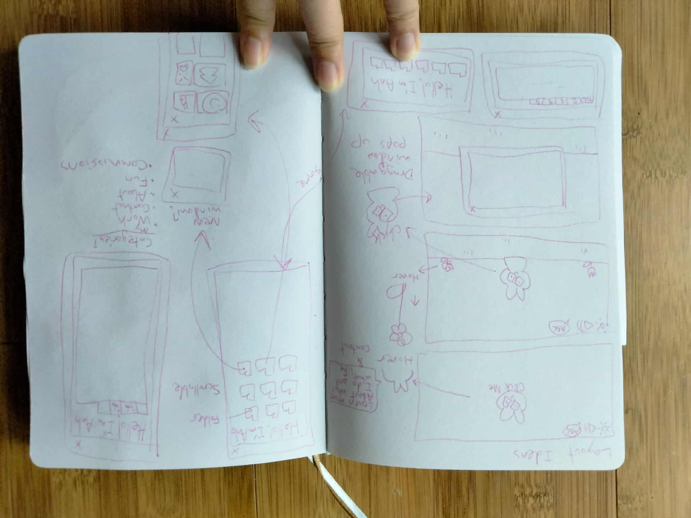

I decided to start making this website after getting inspired by this website: link. I wanted something to use as a LinkTree that could offer a bit more than just a list of links. In addition to that, I didn't want something too serious, so I took inspiration from websites and blogs designed in the early 2000's that went heavy in leaning in every part of a site into a theme of some sort. ヽ(・∀・)ﾉ
So to start off, I used Milanote to jot down ideas and create a moodboard.

At that point, the todo list was made to keep my priorities in order and make sure I get the core starting tasks done:
The website sharyap.com used React, so I decided to use that to help myself review it, as well as get to know more packages I wasn't familiar with like React-Draggable. How sharyap.com used this package was my biggest inspiration and motivation point on making this because I really like how it is used on that website.
I already had the idea to have a dark mode option, so deciding on a colorscheme came pretty quick. Because the overal impression of the website was intended to be not too serious, the light mode colorscheme was chosen to have heavy use of pink with dark brown for text since I found using blacks and greys for text color seemed a bit too traditional. Dark mode colors leaned into purples and violets since that pairs well with pink.
After deciding on a general look, I would jot down ideas on what kind of layout I wanted.
Since the developer of sharyap.com mentioned in a video that explained the development of their website(link) that they wanted to emulate a windows on a desktop with their use of draggable windows, I wanted to do the same with the look of it. However, to defer enough, I chose to lean into using alot of pixel art since that's a style I enjoy using anyway and wanted to take inspiration from a lot of the games I play like Stardew Valley or Short Hike.
I played around a bit in draw.io to get an idea on what features I wanted and what rough idea of website navigation I wanted. What kind of architecture would I expect the information to be arranged in? This is the first draft:

Since this is mainly a website that is fairly self endulgent, I knew the main audience for it is basically myself, and to a certain extent, people, like my audience on social media, who want to get a better idea of who I am and what I do. Because of that, I combined the wireframe and prototyping steps into one and created a rough low fidelity prototype on Figma with some barebones features. That way, I could see what everything looks like placed and get a better idea on what it would feel like to use a website like what I had in mind: link

Fiddling with the prototype on my own allowed me to see what to improve upon consnering how I want the information and features of the website to be structured. So the diagram was updated:

With a more updated diagram of a potential information architecture, I proceded to construct the basic files for the React application. Along the way, assets used for this website would be made using Asesprite.
To be continued...